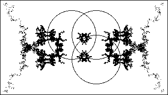

Here are two pictures generated by the Random Algorithm,
for circles of radius 1 and centers
The first contains a rather small number of points, the second more.
Why the random algorithm would cause it to fill in approximately symmetrically is not clear, but we expect it is similar to intermittency).
|  |
Return to overlapping circles.